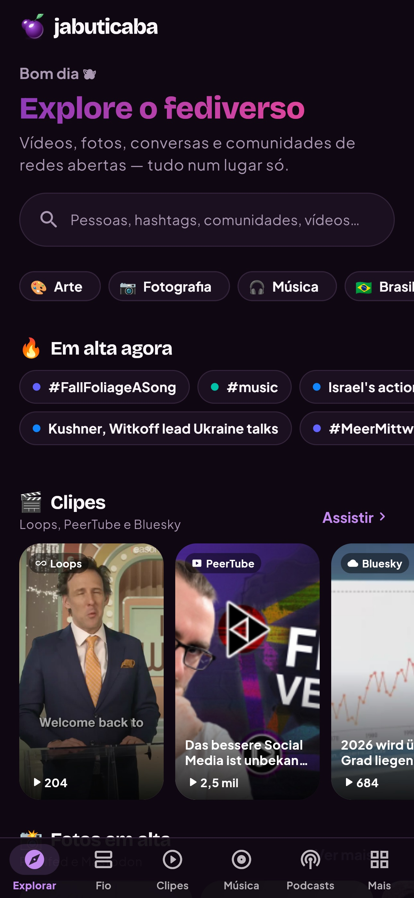
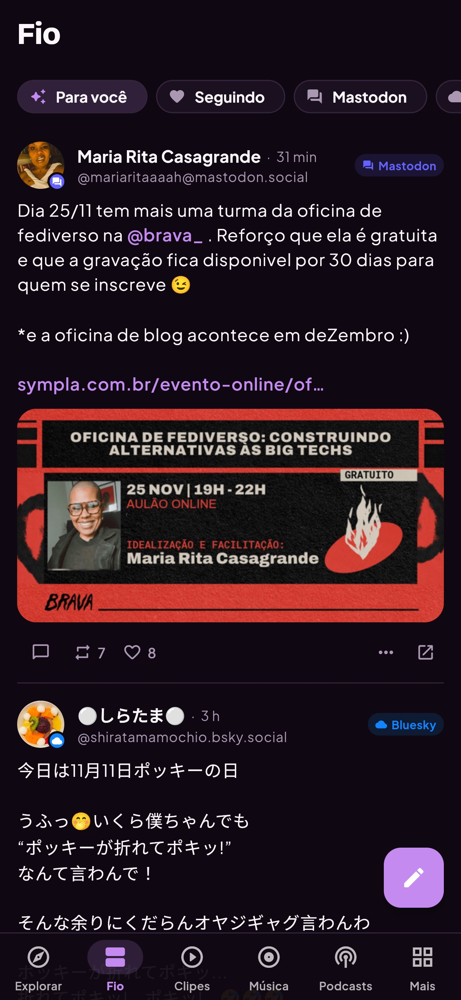
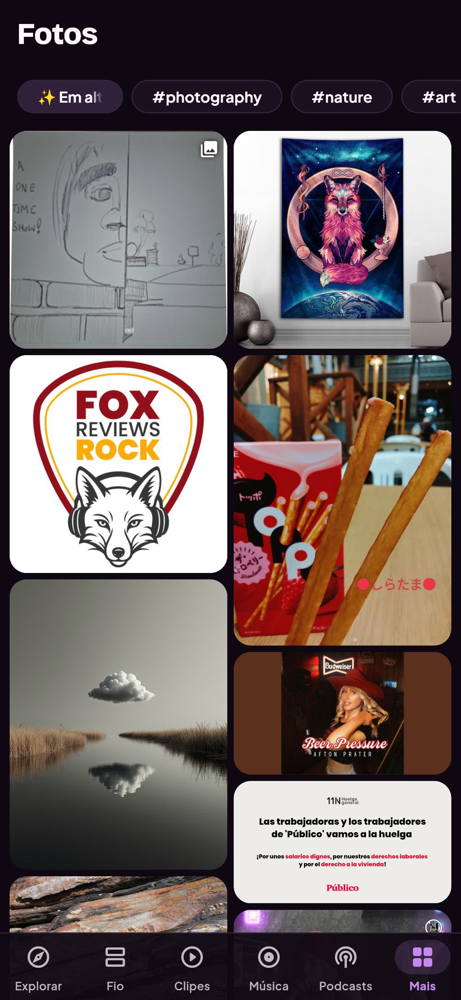
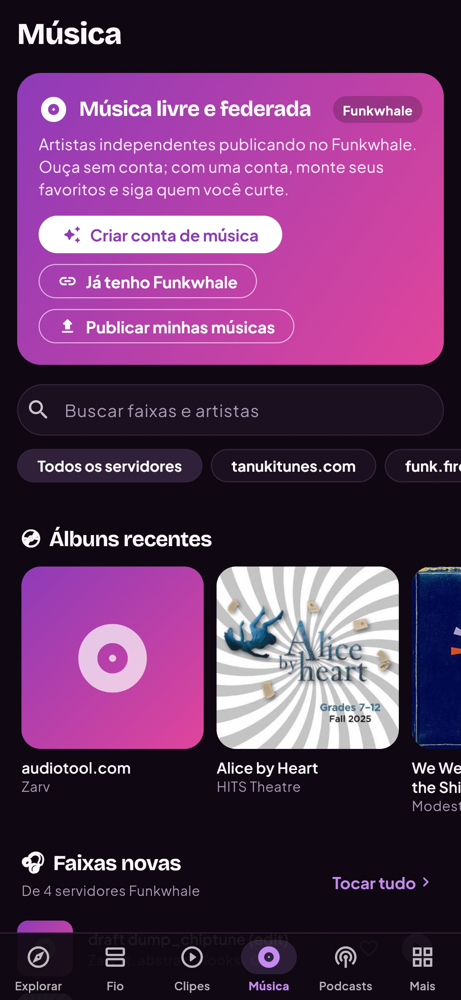
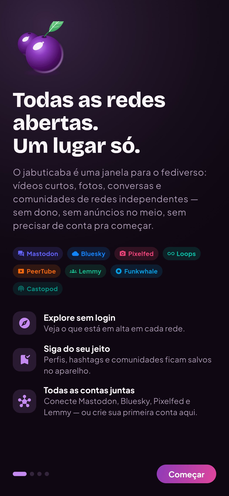
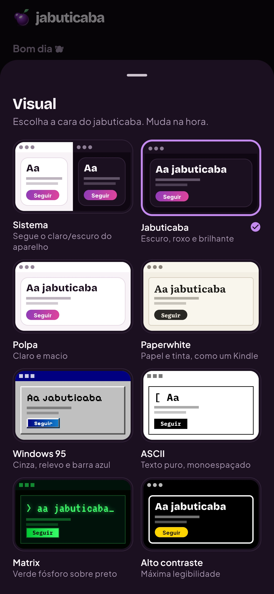

iPhone · iOS 15 ou mais novo
Todas as redes abertas.
Um lugar só.
Vídeos curtos, fotos, conversas e comunidades de Mastodon, Bluesky, Pixelfed, PeerTube, Lemmy, Funkwhale, Loops e Castopod no mesmo app. Sem anúncios, sem rastreamento, sem servidor no meio.






Como instalar
O AltStore Classic instala apps fora da App Store usando a sua conta Apple. É gratuito e não precisa de jailbreak.
Instale o AltStore no computador
Baixe o AltServer em altstore.io, conecte o iPhone pelo cabo e instale o AltStore no aparelho.
Adicione esta source
Toque em “Adicionar ao AltStore” neste site, ou cole o endereço da source em Browse → Sources → +.
Assine com a sua conta Apple
O AltStore assina o jabuticaba no aparelho. Com conta gratuita, renove a cada 7 dias pelo próprio AltStore.
Com conta Apple gratuita: até 3 apps por iPhone e validade de 7 dias por assinatura. Para renovar, o iPhone precisa estar na mesma rede do AltServer. Com conta paga, a assinatura dura 1 ano.
O que tem dentro
Um fio, várias redes
Mastodon, Bluesky e Lemmy misturados na mesma linha do tempo. Uma instância fora do ar não derruba a tela.
Sem conta para explorar
Descubra, siga e monte seu fio antes de criar conta. Quando quiser publicar, o app ajuda a escolher um servidor.
Vídeo, foto, música e podcast
Clipes verticais, galeria masonry, player de música do Funkwhale e podcasts do Castopod.
Moderação de verdade
Denunciar, silenciar e bloquear nas redes que oferecem API. Conteúdo sensível começa escondido.
Seus dados ficam com você
Sem analytics e sem servidor próprio. Tokens no Keychain do iPhone, presos ao aparelho.
Oito temas
Do Paperwhite ao Windows 95, incluindo alto contraste e Matrix. Muda na hora.
Perguntas rápidas
Preciso pagar algo?
Não. O app é AGPL-3.0 e a source é gratuita. A conta Apple gratuita basta; a paga só aumenta a validade da assinatura.
Funciona no Android?
Ainda não há build público. O mesmo código já roda no Android; o pacote sai numa próxima versão.
Por que 7 dias?
É um limite da Apple para apps assinados com conta gratuita. O AltStore renova quando você abre com o AltServer disponível.
O app coleta meus dados?
Não. Ele fala direto com as instâncias que você escolhe, com o seu token. Não há telemetria nem anúncios.